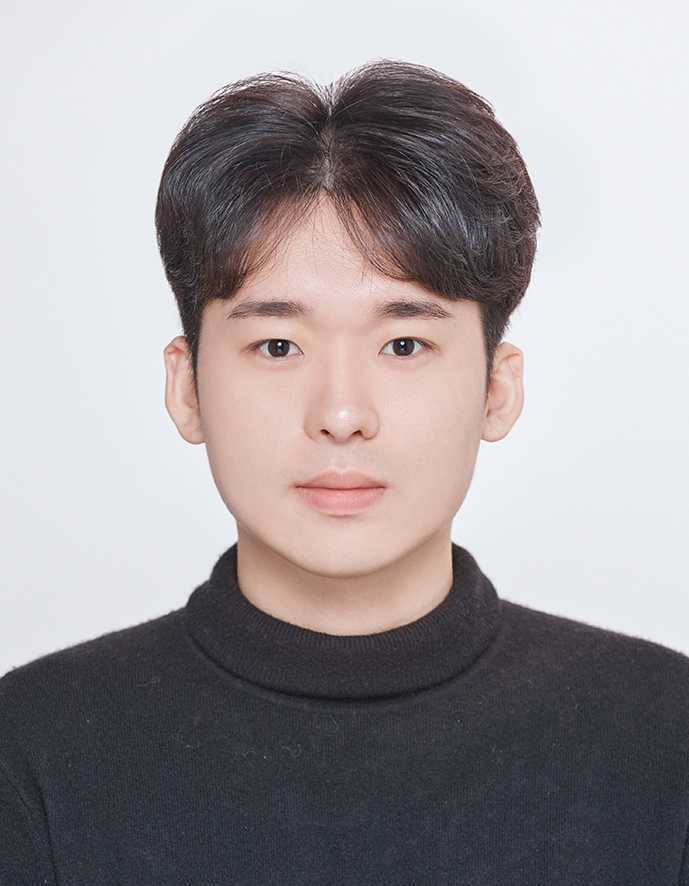

Principal Investigator
-

Insoon Yang
B.S., MAE & Math, Seoul National University, 2009
M.S./Ph.D., EECS, UC Berkeley, 2012/15
M.A., Math, UC Berkeley, 2013
Postdoc., LIDS, Massachusetts Institute of Technology, 2015-16
Assistant Professor, EE, University of Southern California, 2016-18
Assist./Assoc./Full Professor, ECE, Seoul National University, 2018-Onward
Personal webpage: lds-insoon.github.io
Ph.D. Program
-

Giho Kim
B.S., IEOR, Korea University
Research Interest: Reinforcement Learning, Optimization for Machine Learning
-

Chanwoong Park
B.S., ECE, Seoul National University
Research Interest: Optimization for Machine Learning
-

Jaeseok Joo
B.S., ECE, Seoul National University
Research Interest: Reinforcement Learning
-

Joon Ho Han
B.S., ECE, Seoul National University
Research Interest: Reinforcement Learning
-

Howon Lee
B.S., ECE, Seoul National University
M.S., ECE, University of Southern CaliforniaResearch Interest: Autonomous Systems
-

Jungjin Lee
B.S., ME, Seoul National University
Research Interest: Stochastic Control, Trajectory Forecasting
-

Sukchul Jung
B.S., ME, Seoul National University
Research Interest: Reinforcement Learning, Physical AI
-

Sungkwon On
B.Eng./M.Eng., University of Oxford
Research Interest: Reinforcement Learning, Physical AI
-
Sejin Kim
B.S., Applied Math, Stony Brook University
Research Interest: Optimization, Physical AI
-
Donghoon Ryu
B.S., CS, University of Wisconsin, Madison
Research Interest: Physical AI, Continual Learning
-

Gun Choi
B.S., IE, Seoul National University
Research Interest: Distributionally Robust Control, Partially Observable Systems
Hyundai Mobility M.S. Program
-

Hyeongjun Song
B.S., Automotive Engineering, Kookmin University
Research Interest : Autonomous Driving
Administrative Assistant
-

Soonkyung Jung
Email: newan83@snu.ac.kr
Alumni
- Jaeuk Shin (Ph.D., 2026) – Naver Labs
- Astghik Hakobyan (Ph.D., 2023) – Assistant Professor, National Polytechnic University of Armenia
- Youngchae Cho (Postdoc., 2024) – Research Associate, Tokyo Institute of Technology
- Yeoneung Kim (Postdoc., 2022) – Assistant Professor, Dept. of Industrial Engineering, Yonsei University
- Jeongho Kim (Postdoc., 2021) – Assistant Professor, Dept. of Applied Mathematics, Kyung Hee University
- Gihun Kim (M.S., 2023) - Preparing for studying abroad
- Melike Ermis (M.S., 2021) – Startup
- Subin Huh (M.S., 2020) – Samsung Electronics
- Taewoo Kang (M.S., 2020) – TmaxSoft
- Minhyuk Jang (B.S., 2025) – Ph.D. program, UIUC ME
- Jihoon Kim (B.S., 2022) – Ph.D. program, UC Berkeley IEOR
- Keunwoo Lim (B.S., 2021) – Ph.D. program, Univ. of Washington Applied Math
- Kihyun Kim (B.S., 2021) – Ph.D. program, MIT EECS
- Wonkyung Do (B.S., 2019) – Ph.D. program, Stanford University
- Sunho Jang (B.S., 2019) – Ph.D. program, Univ. of Michigan EECS
- Juan Moreno Nadales (Visitor, 2022) – Ph.D. program, Universidad de Sevilla, Spain